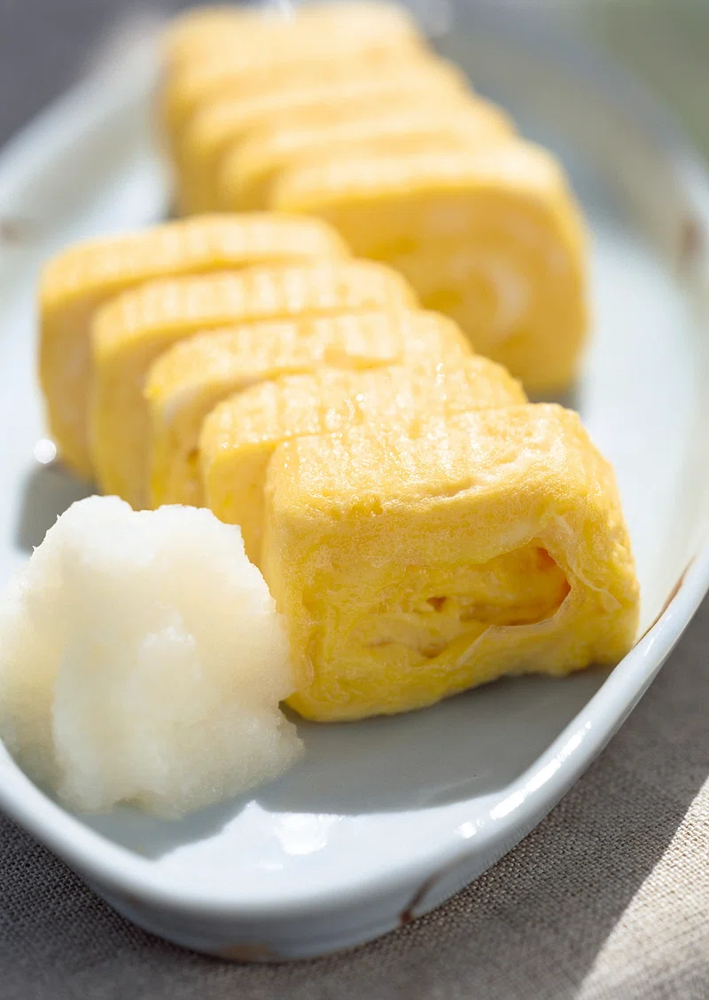

Japanese Tamago Egg

Description
Tamago is traditionally served for breakfast or as a sushi ingredient. A sweet and savory rolled omelette with a light, fluffy, and slightly spongy texture. A fast cooked recipe that can be served over sushi rice with soy and wasabi suace for dipping
Ingredients
- 4 eggs
- 1/4 cup prepared dashi stock
- 1 tablespoon white sugar
- 1 teaspoon mirin (Japanese sweet wine)
- 1/2 teaspoon soy sauce
- 1/2 teaspoon vegetable oil, or more as need
Steps
- Gather all ingredients.
- Beat eggs thoroughly in a bowl; whisk in dashi stock, sugar, mirin, and soy sauce until sugar has dissolved. Lightly grease a nonstick skillet and heat over medium heat.
- Pour a thin layer of egg mixture into the hot pan and swirl to coat the pan. Cook until egg layer is firm on the bottom but still slightly liquid on top, about 1 minute.
- Then lift up one edge using a spatula and roll up the egg layer.
- Push omelet roll to one side of the skillet. Oil the skillet again and pour in another thin layer of egg, lifting the first omelet roll up slightly to allow the egg to flow underneath.
- Roll up the first omelet in the new layer of egg and push omelet to the edge of the skillet as before.
- Remove rolled omelet to a serving platter and cut into 6 equal pieces to serve.
Home